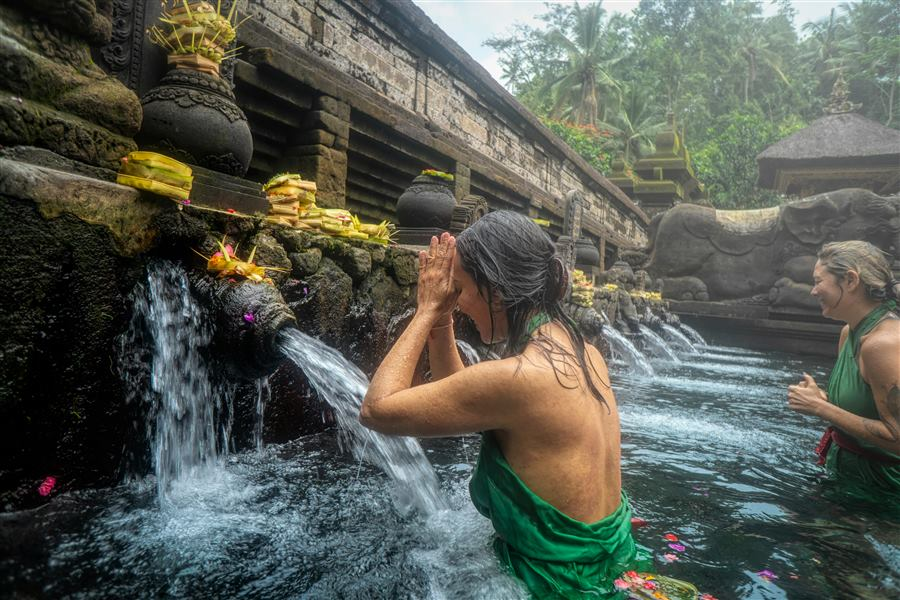

Selva y espíritu
Bali: Ubud, el valle del Ayung y el este sagrado
El viaje empieza tierra adentro. Las villas más especiales de Ubud se asoman al barranco del río Ayung, rodeadas de selva, y son el lugar perfecto para recuperarse del vuelo sin prisa. Desde aquí Bali se vive como la viven los balineses: un melukat privado, el ritual de purificación en los manantiales sagrados de Tirta Empul guiado por un sacerdote solo para vosotros; arrozales en terrazas al amanecer y templos de montaña. Si queréis cambiar de paisaje sin salir de la isla, el este, en Karangasem, ofrece valles rurales a los pies del monte Agung y villas sobre el estrecho de Lombok.
- Melukat privado en Tirta Empul, solo para vosotros
- Helicóptero sobre los volcanes Batur y Agung
- Cena entre arrozales iluminada con antorchas
CuándoTodo el año; de abril a octubre, estación seca.